Inicio
Accesorios
Alfombras
Repuestos
Taller
Contacto
Buscar
Los talleres mecánicos utilizan una variedad de herramientas especializadas para llevar a cabo reparaciones y mantenimiento en vehículos.
Aquí hay una lista de algunas herramientas comunes en talleres mecánicos:
Llaves:
Incluyendo llaves de vaso, llaves ajustables, llaves inglesas y llaves de torque.
Llaves de trinquete:
Facilitan el apriete y aflojamiento de tuercas y pernos.
Juegos de destornilladores:
Variedad de tamaños y tipos para ajustar tornillos y pernos.
Gatos hidráulicos:
Elevan el vehículo para facilitar el acceso a la parte inferior.
Gatos de transmisión:
Ayudan a sostener y posicionar la transmisión durante reparaciones.
Juego de alicates:
Incluyendo alicates de punta, alicates de corte y alicates de bloqueo.
Llaves de tubo:
Para acceder a tuercas en áreas de difícil alcance.
Compresor de aire:
Para alimentar herramientas neumáticas como pistolas de impacto y pistolas de aire.
Herramientas eléctricas:
Taladros, amoladoras, y sierras eléctricas.
Herramientas para frenos:
Llaves para sangrar frenos, calibradores, y herramientas para resorte de freno.
Llave de impacto:
Para apretar y aflojar rápidamente tuercas y pernos.
Multímetro:
Para medir corriente, voltaje y resistencia eléctrica.